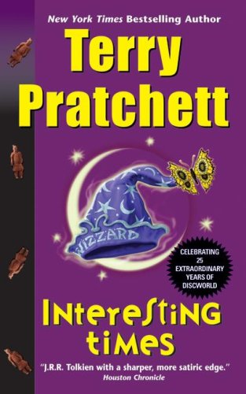

And, therefore education at the University mostly worked by the age-old method of putting a lot of young people in the vicinity of a lot of books and hoping that something would pass from one to the other, while the actual young people put themselves in the vicinity of inns and taverns for exactly the same reason.
